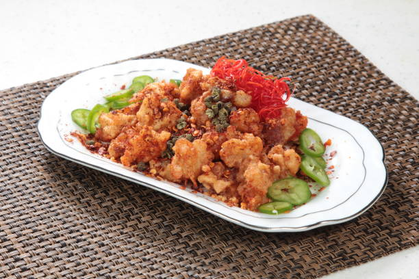

Nimbu Pani:
refreshing, tangy, and mildly sweet Indian drink made primarily from fresh lemon (nimbu) juice, water, and sugar or other sweeteners.
Mango Lassi:

Creamy, sweet, and tangy yogurt-based drink that is good for cooling off in the summertime.
Assam Tea:

type of black tea that originates from the Assam region in northeastern India, known for its rich and robust flavor.
Chai Masala:

spiced tea blend that originates from India, with a blend of various spices, each adding its own unique flavor to the drink.